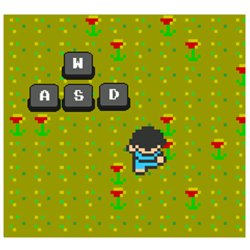
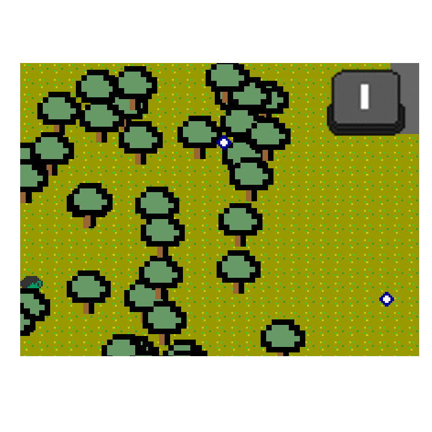
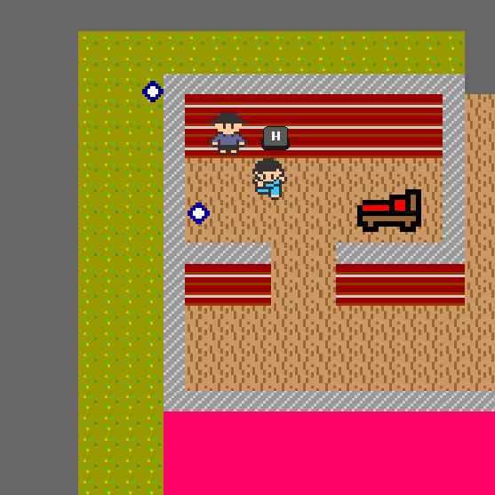
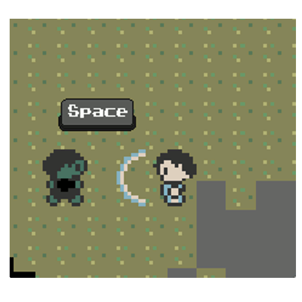
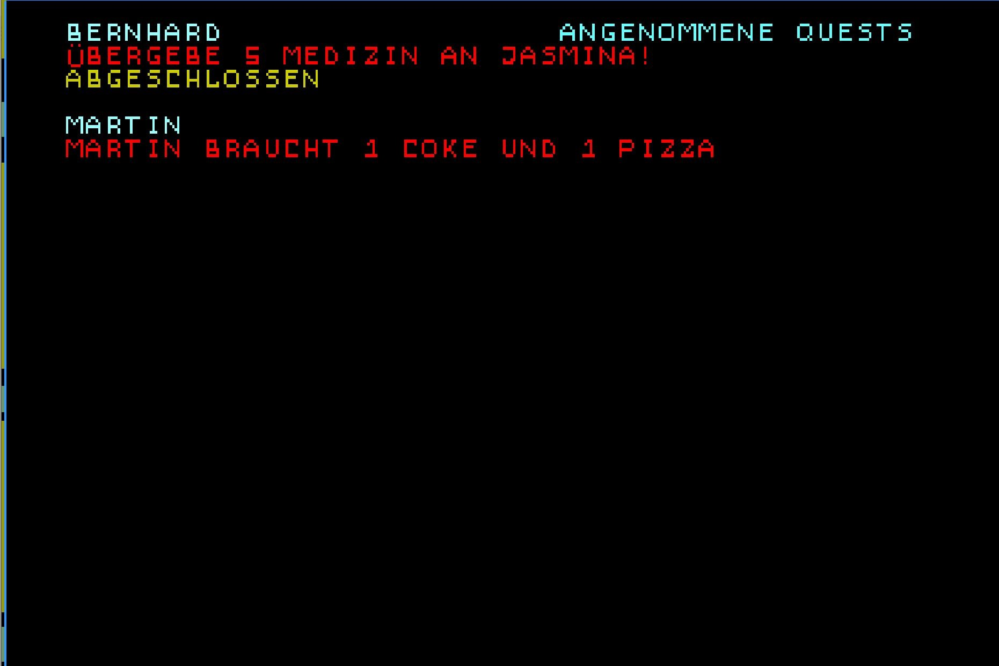
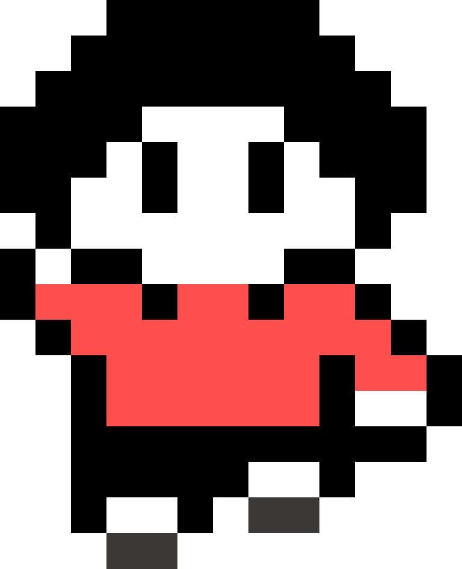

Hallo! Um dich im Spiel zu bewegen verwende folgende Tasten:

Dein vorhandenes Inventar kannst du mit 'I' aufrufen. Die Tasten 1 - 6 sind für das Inventar vorbelegt. Mit der Taste 1 konsumierst du das erste Item im Inventar usw. Du kannst die Items auch verwenden, wenn das Inventar nicht sichtbar ist. Achte aber darauf, dass sich die Tastenbelegung verschieben kann, wenn ein Item verschwindet!

Du kannst einige Personen ansprechen. Probiere dies doch gleich im Spiel einmal aus indem du die Taste 'H' drückst.

Nehm dich in Acht vor Zombies! Sie nehmen dir Leben weg. Du bekämpfst sie durch mehrmaliges Drücken der Leertaste. Du musst dabei deine Energieanzeige im Auge behalten.

Falls du mal deine Quests vergessen solltest, ist dies kein Problem. Drücke hierfür einfach die Taste 'Q' und du siehst sie alle auf einen Blick. Und nun viel Spaß beim Spielen!
